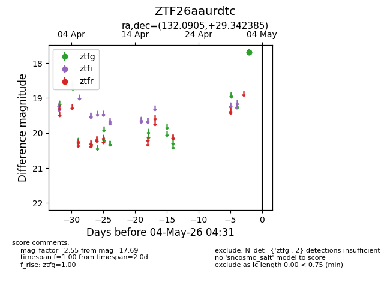
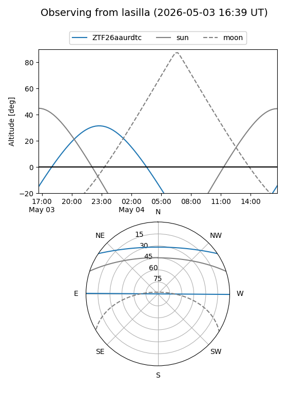
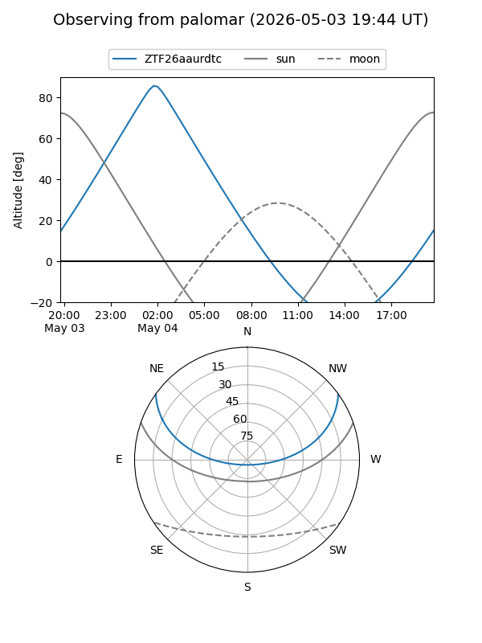

ZTF26aaurdtc
Target ZTF26aaurdtc at 2026-05-04 04:47
Aliases and brokers:
FINK: link
Lasair: link
ALeRCE: link
alt names
ZTF26aaurdtc (ztf,fink_ztf)
Coordinates:
equatorial (ra, dec) = 132.0905,+29.34238
equatorial (HMS+DMS) = 08:48:21.73,+29:20:32.59
galactic (l, b) = (195.2837,+37.03463)
Flags:
Photometry:
last ztfg=17.69
2 ztfg detections
Lightcurve

Visibility


Additional plots